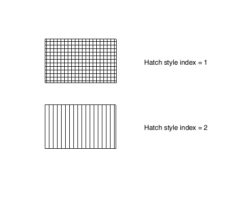

| Source image | Reference image |
|---|---|
 |
This test uses the ACI file to modify the default (horizontal parallel lines) for Hatch Style Index 1. The image on the right shows the CGM rendered with the Hatch Index of the upper rectange replaced with a cross hatch pattern. The lower rectangle which uses Hatch Style Index 2 should remain unchanged.